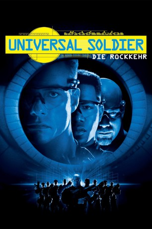

#6083 Universal Soldier 2 - Die Rückkehr
Alternativ: Universal Soldier: The Return
 
 IMDB-Wertung: 4.1 / 10
IMDB-Wertung: 4.1 / 10  Metascore: 0
Metascore: 0 
Luc Deveraux hat seine Erlebnisse als Universal Soldier überstanden und arbeitet für die US-Regierung an einer Verbesserung und Wiederaufnahme des Universal-Soldier-Programms. Als der Supercomputer S.E.T.H. durchdreht und die Kontrolle über die Killermaschinen übernimmt, ist Luc der einzige, der sie stoppen kann.
Jahr: 1999
Dauer: 82 Minuten
FSK: 18
Land: USA Studio: SPETonspuren:
Untertitel:
Auflösung: 720p (1280x694) Größe: 4464 MB
Genre: Action, Sci-Fi
Regisseur: Mic Rodgers
Drehbuch: Ji-hie Eun
Soundtrack:
Darsteller:
 Jean-Claude Van Damme als Luc
Jean-Claude Van Damme als Luc Michael Jai White als SETH
Michael Jai White als SETH Xander Berkeley als Dylan Cotner
Xander Berkeley als Dylan Cotner- Justin Lazard als Capt. Blackburn
- Kiana Tom als Maggie
 Daniel von Bargen als General Radford
Daniel von Bargen als General Radford- James Black als Sergeant Morrow
- Bill Goldberg als Romeo
- Brent Anderson als 2nd Technician
 Pam Dougherty als 60 Yr. Old Woman
Pam Dougherty als 60 Yr. Old Woman- Heidi Franz als Erin's Stripper
 Josh Berry als Radio Man
Josh Berry als Radio Man- Mark Dalton als Lead RL Guard
- Robin Arcuri als Waitress , uncredited
 Jim Henry als UniSol / Security Guard , uncredited
Jim Henry als UniSol / Security Guard , uncredited Lyle Kanouse als UniSol 2500 , uncredited
Lyle Kanouse als UniSol 2500 , uncredited- Jay Moore als Soldier , uncredited
 Mic Rodgers als Big Biker , uncredited
Mic Rodgers als Big Biker , uncredited- Adam Russell Stuart als General's Aide , uncredited
- Heidi Schanz als Erin
- Karis Paige Bryant als Hillary
- Brent Hinkley als Squid
- Woody Watson als RL Gate Guard
- Jacqueline Klein als Betty Wilson
- Maria Arita als Kitty Anderson
- Sam Williamson als Hillary's Doctor
- Dion Culberson als Drag Queen
- Barbara Petricini-Buxton als Female News Anchor
- Molly Moroney als Pediatric Nurse
- Paul Heckmann als Nightclub Patron , uncredited
- John Lee Lewis als RL Med Tech , uncredited
- W. Glenn Malmskog als SEAL Demolitions Man , uncredited
- Mark Nicholson als Club Manager , uncredited
- Scott Roland als UniSol , uncredited
- Colin Skelton als Technician , uncredited
- Derek Southers als UniSol , uncredited
- Bruce Stewart als ER Doctor , uncredited
- Marvin Frank Stone III als Unisol Security Guard , uncredited
- Sylvester 'Bear' Terkay als Hospital Security , uncredited
Datei: X:\FSK18-Collections\Universal Soldier\Universal Soldier 2 - Die Rückkehr (1999, FSK18, 1280x694).mkv seit 28.04.2017
Festplatte: FSK18
 Es gibt insgesamt 7 Filme in der Gruppe 'FSK18-Collections\Universal Soldier'
Es gibt insgesamt 7 Filme in der Gruppe 'FSK18-Collections\Universal Soldier'